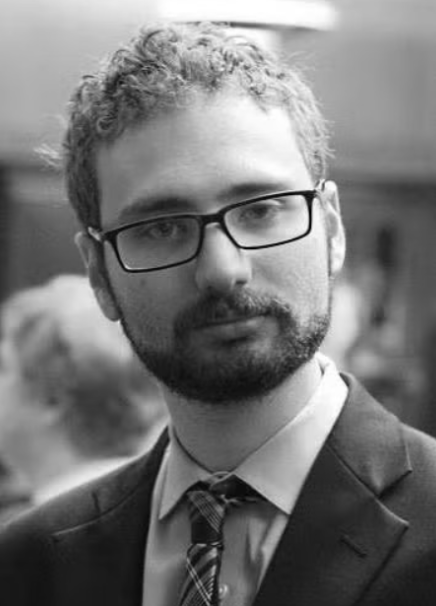
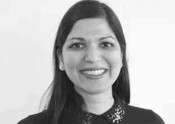
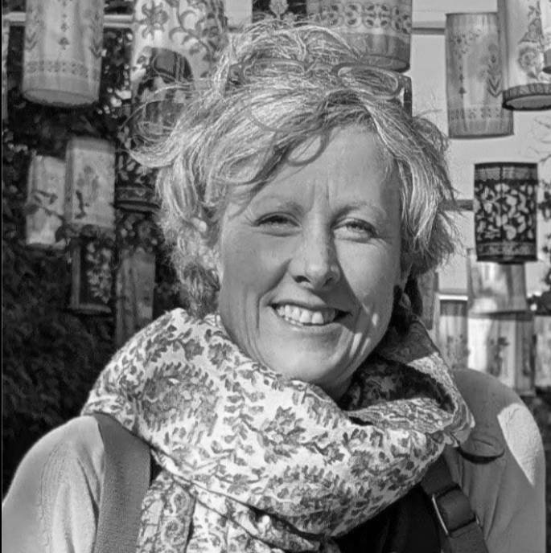
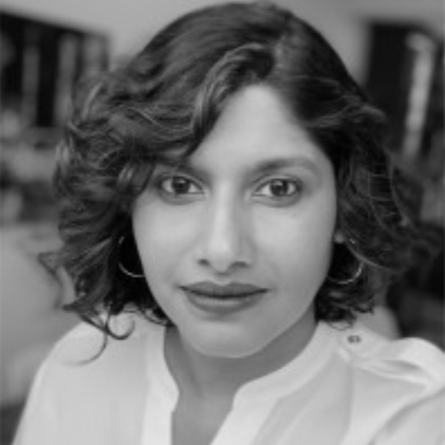
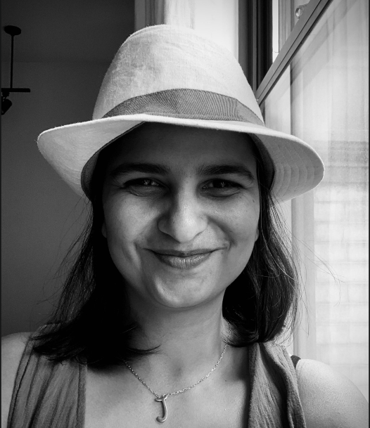
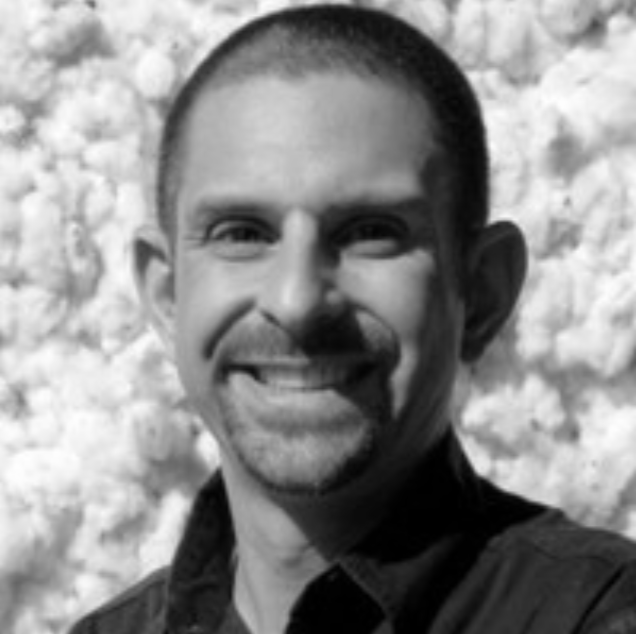

CHANGING HOW KNOWLEDGE AND POWER FLOWS
The Global Impact Forum (TGIF) is a 501(c)3 entity that surfaces under-represented voices and populations through narrative building, and enables cross-learning between the US and the Global Majority world.
Knowledge is one of the most powerful levers for change. What is known, seen, and showcased influences who gets attention and who holds power.
Too often, the expertise, perspectives and lived experiences of practitioners and communities from the Global Majority are underrepresented in international philanthropic discourse and consequently, in decision making. This information asymmetry results in fragmented and unequal access to knowledge while also reinforcing existing power structures.
At a time when societal challenges are complex, interlinked, and increasingly global in nature, we are seeing issues and potential solutions intersect in ways that require collaboration across geographies and disciplines.
We therefore need to ensure that there is cross learning across different regions in the world, with attention paid, and investments allocated, to approaches and models from Asia, Africa and Latin America.
By democratising access to information globally, we want to create a world where the wisdom and expertise of local actors informs global strategies, thereby dismantling the traditional one-way flow of knowledge and power.
Invests in programs that provide solutions to deep-rooted social inequalities and build the capacities of credible grassroots organizations across the globe.
A private family foundation based in San Francisco, CA that supports organizations working across multiple sectors.
Supports global partners through grant-making to build a safer, fairer, and more sustainable world for all.

CHIEF OPERATING OFFICER
Peter brings extensive operational expertise to TGIF, ensuring our strategic initiatives are executed effectively and our cross-learning platforms scale with deep, sustainable impact globally.

HEAD – PARTNERSHIPS AND PHILANTHROPY NARRATIVES
Radhika is a philanthropy advisor who specializes in advancing gender equality in the US and globally. She has advised individual donors and built donor networks to accelerate social change. She currently serves on the board of Sakhi for South Asian Survivors.

GLOBAL ADVISOR – KNOWLEDGE COMMONS
Alison has 25 years of experience in the development sector. She believes strongly that civil society voices have to reach decision-makers wherever they sit. She sits on the board of Educate Girls UK and is a practitioner in residence at the LSE.

President
Nidhi is the Executive Director of the American Economic Liberties Project, which she helped launch in 2020 and build into a leading voice in the antimonopoly movement. Previously, she worked at the Open Markets Institute, Omidyar Network and FSG. Nidhi holds a Master of Public Affairs from the Goldman School of Public Policy, at UC Berkeley.

Treasurer
Jayati is an award-winning journalist and editor with a career spanning investigative media, narrative journalism, and social impact communications. A former features editor at Al Jazeera America, she also worked as an Associate Editor at The Nation Institute, with her work having appeared in Mother Jones and other leading publications.

Director
Seth is a Senior Program Director at Sustainable Food Lab, with over 25 years of experience building sustainable global supply chains across Asia, Africa, Latin America, and the US. He founded Shop for Change in India and has also worked at Oxfam America, Fair Trade USA, and The World Bank. He holds an MBA and Master of Public Policy, from Georgetown University.
This first-of-its kind AI-led program aims to dismantle the deeply entrenched hegemony of the Global North when it comes to development sector knowledge.
The Global Majority world produces a vast and continuously growing body of knowledge— data, evaluations, case studies, policy analysis — that directly informs development practice. The knowledge exists. What doesn’t is the infrastructure for it to travel globally.
The problem is compounding with AI. There is a clear risk that in addition to southern knowledge remaining marginal, AI systems trained predominantly on Global North sources will entrench existing hierarchies in a new and more powerful form.
The Global Majority Knowledge Commons (GMKC) is an AI-powered, collaborative platform built by and for the Global Majority – a public good that has the potential to democratise evidence, insights and solutions from and for communities across the Americas, Africa, and Asia. The GMKC is:
This multi-year program aims to change how knowledge and power flows when it comes to South Asian diaspora giving in the US.